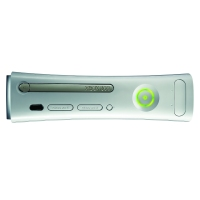
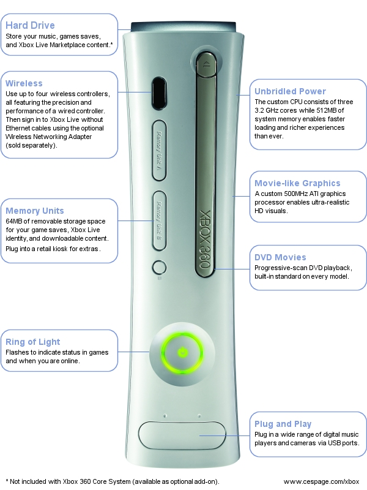
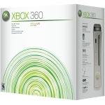
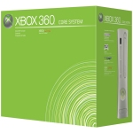
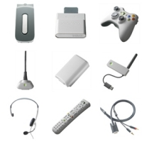
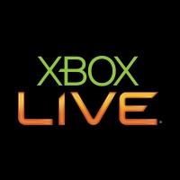
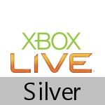
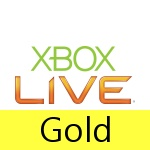

Xbox 360 Brochure
Here you can find all the information about the Xbox 360 from the Xbox 360 Guide customer brochure
By CESPage.com Xbox, Published 29th August 2005
The future of gaming and entertainment begins
The wait for the ultimate entertainment experience is over. Introducing Xbox 360, the platform that redefines the way you play your games, the way you communicate with your friends, and the way you bring your digital entertainment to life.
Powerful
A custom, symmetrical three-core CPU with each core running at 3.2 GHz and unique 500 MHz ATI graphics processor power movie-like high-definition graphics. Xbox 360 is the first game console to have wireless controllers integrated into the system. Play media directly from your portable music player or digital camera. Play your games online with the next generation of Xbox Live, the most robust gaming network ever.
Personalised
The total gaming experience is yours to customise. Craft your online identity, customise entertainment access with Family Settings, even change the look of your console with interchangeable Faceplates. Make the Xbox 360 system yours.
Driven by Choice
Choose how your Xbox 360 works, plays, and grows. Select from two console packages, Xbox 360 or Xbox 360 Core System. Go for wireless or wired controllers. Save your games to a portable Memory Unit or a high-capacity hard drive. Enjoy free Xbox Live Silver benefits or subscribe to Xbox Live Gold for unmatched online game-play. Choose from the powerhouse Xbox 360 game library and even play original Xbox games.*
* Requires Hard Drive
Play the Greatest Games Line-up Ever
- Blockbuster games only on Xbox 360
- Multi-system games will perform best on Xbox 360
- Optimised for standard and HDTVs
- All online enabled
Play Online with Xbox Live
- Games for everyone from Ms Pac-Man to Perfect Dark Zero
- Voice, text, and video chat
- Download demos, levels, maps and more
Immerse Yourself in Movie-Like Graphics
- Custom 500 MHz AT graphics processor
- Custom, symmetrical 3 core CPU, with each core running at 3.2 GHz
- 512MB unified system memory
The centre of your home entertainment
- Listen to music from your portable music player and CDs
- Watch your DVDs movies in progressive scan
- Create and watch photo slideshows on your living room TV
You control the experience
- Customise your console with Faceplates
- Personalise your digital identity, user interface, custom play-lists
- Family-friendly entertainment through customised settings

With the Xbox 360 you have the choice of two consoles - the Xbox 360 and the Xbox 360 Core System. Pick the one that fits your personal lifestyle, then customise and expand as you see fit. Streamlined of fully loaded? It's best when it's left up to you.
Only Xbox 360 delivers all this and more:
- The most powerful console, even more powerful than any PC currently in production
- Welcome to the HD era. Enjoy astounding movie-like game graphics on either your high-definition or standard-definition television set.
- Built from the ground up for the wireless age. Enjoy precise control and hassle-free networking without cables.
- Your favourites come with you - Xbox 360 is backward compatible with top-selling Xbox games, including Halo 2 **
- Use Xbox 360 as the centre for your home entertainment experience. Connect your existing MP3 player, digital camera, and other devices.
The choice is yours. Make it.
The power is yours. Take it.
| Item |  |  |
|---|---|---|
| Console | Yes | Yes |
| Wireless Controller | Yes | Optional |
| Wired Controller | Optional | Yes |
| Component HDAV Cable | Yes | Optional |
| Composite AV Cable | Yes | Yes |
| Hard Drive | Yes | Optional |
| Play original Xbox games** | Yes | Optional |
| Ethernet Cable | Yes | Optional |
| Headset | Yes | Optional |
| Xbox Live Silver | Yes | Yes |
| Xbox Live Gold 30-day Trial | Yes | Yes |
| Premium Chrome Details | Yes | Not Available |
** Requires Hard Drive
Accessorise Xbox 360 Your Way
Control
- Controller The new standard for wired controllers
- Universal Media Remote Control your TV, Xbox 360 games, and DVD playback with one remote.
- Play & Charge Kit Recharge your Wireless Controller while you play. Don't miss a moment of the action.
- Wireless Controller Lose the wires, not performance. Precision, comfort, and control with wireless freedom.
Communicate
- Xbox Live Vision Bring Xbox 360 into sharp focus. Enjoy video chat via Xbox Live, (Available Spring 2006)
- Headset Talk with friends over Xbox Live
Personalise
- Faceplates Personalise the look of your Xbox 360
Store
- Memory Unit (64MB) Take your game saves and Xbox Live gamertag on the go, and download extras from kiosks at participating retailers.
- Hard Drive (20GB) Store your custom music play-lists and Xbox Live Marketplace content.
Connect
- Wireless Networking Adapter Connect wirelessly to Xbox Live via your home network.
- Component HD AV Cable S-Video AV Cable VGA HD AV Cable Experience the ultimate in Xbox 360 visuals. Choose S-Video, Component, or VGA output.

Where the fun begins
Up to 40 Games This Holiday
Expect a full shelf in December, plus there's another 160 games in development, it's the biggest console launch ever.
Exclusive to Xbox 360
Perfect Dark Zero, Project Gotham Racing 3, Quake 4, Kameo, Dead or Alive 4, plus a dozen more - only available on Xbox 360.
Better Than the Rest
Not only can the Xbox 360 run the top-selling Xbox titles, but multiplatform games like Madden NFL 06 and Final Fantasy XI simply look and play better on Xbox 360.
High-Definition Graphics
All Xbox 360 games are optimised for HD displays, but you'll see stunning visuals on standard TVs too.
100% Xbox Live Support
Every Xbox 360 game supports Xbox Live, the world's most robust online gaming service.
Your Favourite Game Awaits
What's your game? Smoking tyres? Strength? Shotguns? Fear? Teamwork? All of the above? Play it on Xbox 360.
Two million friends want to meet you
Wanna play?
You're invited to the biggest party in the world...come on, don't be shy!
Never underestimate the power of people in large groups. Xbox Live for Xbox and Xbox 360 is a thriving community!
- Two million people and growing. Join in on the fun...it's easy and as simple as 1,2,3
- With your Xbox 360, you get everything you need to connect, right out of the box.*
- Just plug one side of the Ethernet cable to your broadband connection and the other side to your new Xbox 360 system and you instantly become and Xbox Live Silver member.
- Then, create your Gamertag, your digital identity or transfer your existing membership over to the new Xbox 360 system and it's that easy!
Congratulations - you're now a part of the always-on Xbox Live community.
Get Connected
Connecting your console is simple;
Becoming an Xbox Live member is even simpler. You have a few choices to make it easy.
- You can choose to use your credit card or a pre-paid card, available at your favourite participating retailer.
- Your offers can be stacked, If you're down for a full year and someone gives you a 3-month membership card as a gift, just stack it on to your annual membership for a full 15 months of pure fun.
Social Network
Get the party started! Once you're online, get connected with friends both old and new.
- With Xbox Live, see which of your friends are online and what they're up to...you can even see their list of friends.
- Hang out and send them a text message or use the Xbox 360 headset to chat in person or leave them a voice mail message.
- Check out their rating and reputation in the community or their latest gaming Achievements.
- Jump into their game and stay with them or sit back and watch their progress in Spectator mode.
* Xbox Live compatible Broadband connection required
Games
Get more from your games...boost your gaming and entertainment experiences to levels never before thought possible. Online games add a whole new level to fun...a little friendly competition with another real person...there's nothing better!
- Every Xbox 360 Game is Live enabled!
- Xbox Live Silver membership gets you connected.
- Xbox Live Gold membership will put your skills to the test as you play with and/or against opponents matched perfectly for your level.
- Play in tournaments, leagues, ladders and more. Sign in and meet someone. Or beat someone. After all, it's good to play together.
- You can choose to play cooperatively or challenge people from just around the block or around the world. By Holiday 2005 there will be than 350 Xbox and Xbox 360 games that are Xbox Live enabled. So pick a game...any game either Xbox or Xbox 360 that is Xbox Live enabled and go for Gold!
Xbox Live Marketplace
Xbox Live Marketplace expands your gaming experience even further.
- Access free demos and trailers of upcoming games, download new levels, new maps, new vehicles and more.
- Just a few button presses and you can get back to your game because it just got bigger, better, deeper and richer than you could imagine.
Xbox Live is gaming without limits; where the possibilities and rewards are endless.
Don't Miss Out
Join Xbox Live now with your Xbox System
Xbox Live 3-Month Starter Kit (for Xbox)
- 3-month Xbox Live membership
- Xbox Communicator
- Xbox Live Arcade game
- Two Xbox game demos
Go for Gold with Xbox Live on Xbox 360
Xbox Live 3-Month Premium Gold Value Kit (for Xbox 360)
- 3-month Xbox Live Gold membership
- Xbox 360 Headset
- Xbox Live Arcade game
- 100 Xbox Live Marketplace Points
- $10 off mail in rebate for an Xbox 360 game (limited time offer)
Xbox Live 12-Month Premium Gold Value Kit (for Xbox 360)
- 12-month Xbox Live Gold membership
- Xbox 360 Headset
- Xbox Live Arcade game
- 200 Xbox Live Marketplace Points
- $20 off mail in rebate for an Xbox 360 game (limited time offer)
Xbox Live
Welcome to Silver
Go for the Gold
Every single Xbox 350 owner is instantly a member of the Xbox Live community the instant they connect their console to the Internet using a broadband connection. However, as much as an Xbox Live Silver subscription offers you right out of the box, and Xbox Live Gold upgrade offers you even more. See the benefits you already enjoy, and what's in store.
Support for every Xbox 360 game
Since every Xbox 360 game is Xbox Live aware, your friends will instantly know what game you're enjoying. Some games also use multiplayer for use with Gold subscription.
Access to Xbox Live Marketplace
Download new maps, weapons, trailers, demos, even entire Xbox Live Arcade games. Buy new content with Points - no credit card required.
Create your Gamer Profile
Show the world your face - or don't display your in game Achievements, share your personality, and create a Gamercard.
Enhanced Matchmaking
Enter your gaming style and preferences and you'll be matched up with the best opponent for your personal tastes and skills.
| Item |  |  |
|---|---|---|
| Support for every Xbox 360 game | Yes | Yes |
| Maintain a Friends List | Yes | Yes |
| Access to Xbox Live Marketplace | Yes | Yes |
| Use Message Centre to send and receive text and voice messages | Yes | Yes |
| Receive auto-updates to help keep software current | Yes | Yes |
| Free Live weekend play trials | Yes | Yes |
| Create your Gamer profile | Yes | Yes |
| Online multiplayer game-play | No | Yes |
| Exclusive Xbox Live Marketplace downloads | No | Yes |
| Enhanced Matchmaking | No | Yes |
Many Consoles.
One Xbox Live.
Whether you're an existing Xbox owner or a proud new owner of the Xbox 360, Xbox Live will be your entry into the most robust online gaming network in existence, Xbox Live is ready for you. It's not only the link between gamers and friends, but it's also the link between the current generation and the next generation of gaming. Whether you own an Xbox, an Xbox 360, or both, Xbox Live is ready for you.
- Use your existing subscription to log in via Xbox or Xbox 360*
- Keep your Gamertag and expand your established identity
- Play compatible original Xbox games on Xbox Live on Xbox 360 (Xbox 360 hard drive required)
- Check in on what your friends are playing on either console
- Enjoy the flexibility of dual platform ownership
- Join 2 million Xbox and Xbox 360 games from around the world
* Note: Existing Xbox Live accounts will be compatible with Xbox 360, but first-time Xbox Live signups created on Xbox 360 are not backwards compatible with the original Xbox.
Don't Miss Out!
Xbox Live Subscription Card Available in three varieties:
1-Month, 3-Month, and 12-Month + 1 Free Month
- Extend your online experience with out the hassles of credit cards
- Use cards to "stack" and extend your existing subscription at any time
Xbox Live Marketplace Points Card (value varies)
- Exchange Xbox Live Marketplace Points for special downloads, in-game objects, even entire Xbox Live Arcade games!
Source : Xbox 360 Guide Brochure